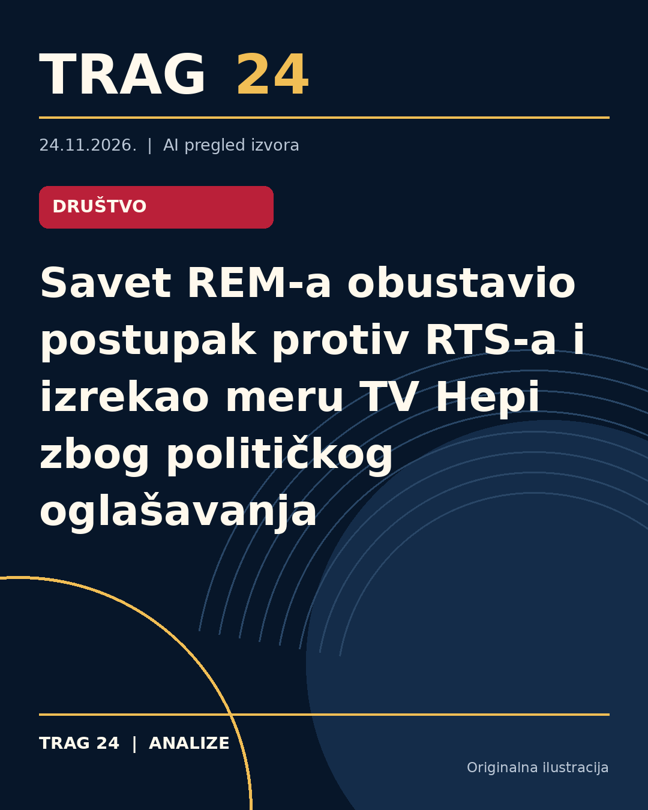

Savet REM-a obustavio postupak protiv RTS-a i izrekao meru TV Hepi zbog političkog oglašavanja

ŠTA SE DOGODILO
Na devetoj redovnoj sednici Saveta Regulatornog tela za elektronske medije (REM) razmatrani su postupci protiv nekoliko televizija, uključujući RTS i TV Hepi. Postupak protiv RTS-a zbog spornog dela emitovanog u emisiji "Jutarnji program" obustavljen je jer nije bilo dovoljno dokaza za izricanje sankcija. Sa druge strane, TV Hepi je dobila upozorenje i prekršajnu prijavu zbog emitovanja izbornog spota sa nepravilnom oznakom i prekoračenja vremena za oglašavanje.
HRONOLOGIJA
Postupak protiv RTS-a pokrenut je zbog sumnji na kršenje rodne ravnopravnosti u emisiji "Jutarnji program" emitovanoj 20. oktobra. Sporni spot sadržao je rodni stereotip. Nakon unutrašnjeg skraćivanja spota od strane RTS-a i analize stručne službe REM-a, Savet REM-a nije našao osnove za dalje sankcionisanje i jednoglasno je obustavio postupak. Istovremeno, pokrenut je ispitni postupak protiv TV Hepi zbog emitovanja izbornog spota liste "Aleksandar Vučić – Ujedinjena Srbija" sa neprikladnom oznakom „iznajmljen termin" i prekršaja kod trajanja oglašavanja. Za TV Hepi je izrečena mera upozorenja i podneta prekršajna prijava. Takođe, pokrenuti su postupci protiv televizija SuperStar 1, 2 i 3 zbog neusklađenosti emitovanog programa sa registrovanom vrstom sadržaja i protiv K1 zbog angažovanog komentarisanja u programu.
ŠTA NAVODE IZVORI
Prema informacijama sa portala Nova.rs, Mašina i Euronews Srbija, RTS je branio skraćeni spot, a stručna služba REM-a nije utvrdila povredu zakona, što je član Saveta REM-a Milan Petković komentarisao kao postojanje rodnog stereotipa ali bez osnova za sankcije. Za TV Hepi ističe se da je označavanje izbornog spota kao „iznajmljen termin" zakonski neprihvatljivo i da je prekoračeno dozvoljeno vreme oglašavanja. Svi izvori naglašavaju jednoglasnu odluku Saveta REM-a oko obustave postupka protiv RTS-a i usvajanje mera protiv TV Hepi. Takođe, pokrenuti su novi ispitni postupci za SuperStar televizije i K1.
ŠTA JE POTVRĐENO
Potvrđeno je da je Savet REM-a na sednici 24. novembra obustavio postupak protiv RTS-a zbog emisije "Jutarnji program" i izrekao meru upozorenja i podneo prekršajnu prijavu TV Hepi zbog povrede pravila političkog oglašavanja. Podignuti su ispitni postupci protiv SuperStar 1, 2, 3 i televizije K1. Odluke su donesene većinom ili jednoglasno, a stručna služba REM-a dala je svoje analize koje su poslužile kao osnova za odluke.
ŠTA NIJE POTVRĐENO
Nije potvrđeno da je bilo kakva sankcija izrečena RTS-u, kao ni navodi o drugim komentarima ili potezima koje bi RTS eventualno preduzeo nakon donete odluke. Takođe, nijedan izvor ne navodi detalje o sadržaju spornog spota osim da sadrži rodni stereotipni izraz. Nema potvrde o drugim eventualnim merama prema drugim medijima osim navedenih. Detalji o daljem toku postupaka protiv SuperStar i K1 televizija nisu precizirani.
ŠTA OSTАJE OTVORENO: Ostaje otvoreno kako će se dalje odvijati ispitni postupci protiv SuperStar televizija i K1, uključujući moguće mere koje će REM doneti. Takođe, nije poznato da li će biti dodatnih postupaka vezanih za RTS ili TV Hepi. Nije definisan konačni sadržaj i pridržavanje novih pravila u političkom oglašavanju u budućem periodu. Razmatranje Plana nadzora REM-a za 2027. godinu je u toku i ostaće predmet daljih diskusija i odluka.
ŠTA JE GLAVNI FOKUS VESTI: Regulacija elektronskih medija u Srbiji i postupci REM-a prema televizijama RTS i TV Hepi vezano za rodne stereotipe i pravila političkog oglašavanja.
Izvori
- https://nova.rs/vesti/drustvo/savet-rem-a-obustavio-postupak-protiv-rts-a-pokrenuo-protiv-tv-hepi/
- https://www.masina.rs/sednica-rem-a-obustavljen-postupak-protiv-rts-a/
- https://www.euronews.rs/srbija/drustvo/253451/rem-obustavio-postupak-protiv-rts-a-upozorenje-za-tv-hepi/vest
Ova analiza je pripremljena uz pomoć veštačke inteligencije na osnovu javno dostupnih izvora. Navodi izvora nisu nužno nezavisno potvrđeni.